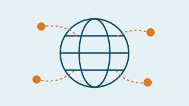
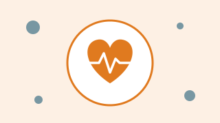
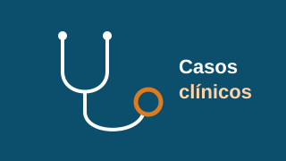
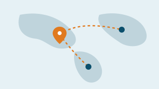

The Global Health Network (TGHN)
[PENDIENTE: descripción breve de la participación del IAV en TGHN.]
Actividades y eventos de TGHN →Tegucigalpa, Honduras
Investigación colaborativa en salud en Honduras.
[PENDIENTE: texto institucional de “Quiénes somos”. No se recibió en la información disponible.]
[PENDIENTE: texto de la misión.]
[PENDIENTE: texto de la visión.]

[PENDIENTE: descripción breve de la participación del IAV en TGHN.]
Actividades y eventos de TGHN →
Proyecto colaborativo con la Universidad de Tulane (Nueva Orleans, EE. UU.) que mide infecciones en mujeres embarazadas en su primer control prenatal, incluyendo Zika y, desde 2024, la enfermedad de Chagas.
Leer más →[PENDIENTE: tercer proyecto por definir.]
En el año 2016 inició el proyecto Infección por Zika durante el embarazo en Honduras (ZIPH, Zika Infections in Pregnancy in Honduras) con el objetivo de medir la infección de este virus entre mujeres embarazadas que asisten al primer control prenatal y asociar la infección a microcefalia y alteraciones en el neurodesarrollo de los niños nacidos expuestos al virus durante el embarazo.
A partir del año 2024, este proyecto se denominó Cero Infecciones en el Embarazo en Honduras (ZIPH2, Zero Infections in Pregnancy in Honduras) con el objetivo de medir infecciones en mujeres embarazadas en Honduras que asisten a su primer control prenatal. En esta nueva fase se ha incluido la enfermedad de Chagas y las posibles consecuencias entre los niños nacidos de madres que resultaron positivas para la infección. Este proyecto tiene una cohorte de mujeres embarazadas con la potencialidad de medir otras infecciones y de servir como monitoreo de enfermedades emergentes; anteriormente se pudo evaluar la especificidad de las pruebas rápidas para COVID-19.
Es un proyecto colaborativo entre la Universidad de Tulane, Nueva Orleans, Estados Unidos, y el Instituto Antonio Vidal, Tegucigalpa, Honduras. Los sitios de estudio están ubicados en el Hospital Escuela, el CIS Alonzo Suazo y el Hospital San Felipe.

[PENDIENTE: fecha, hora, lugar y enlace de inscripción.]

[PENDIENTE: el sitio anterior tenía dos recursos subidos; no se recibió su contenido.]